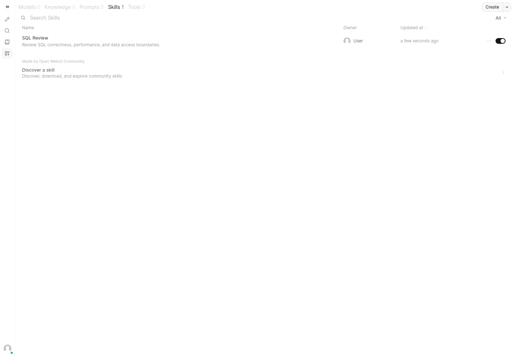
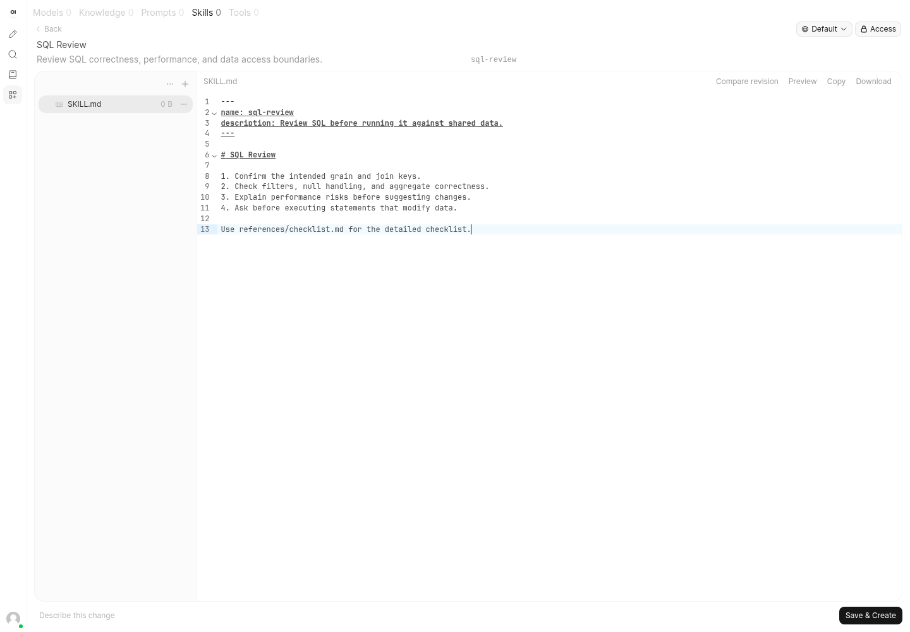
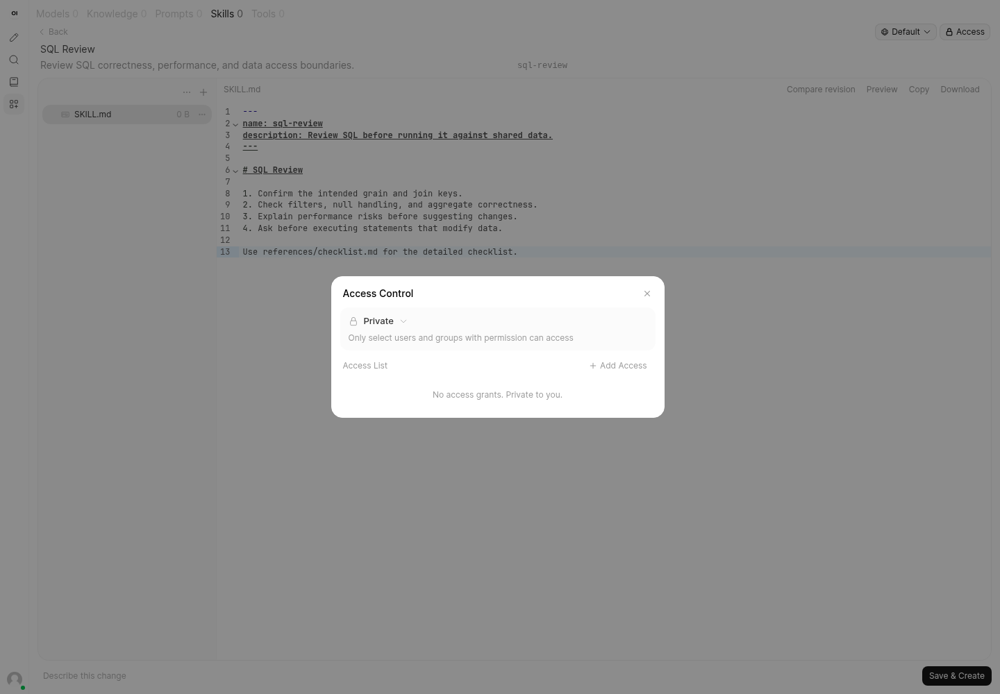
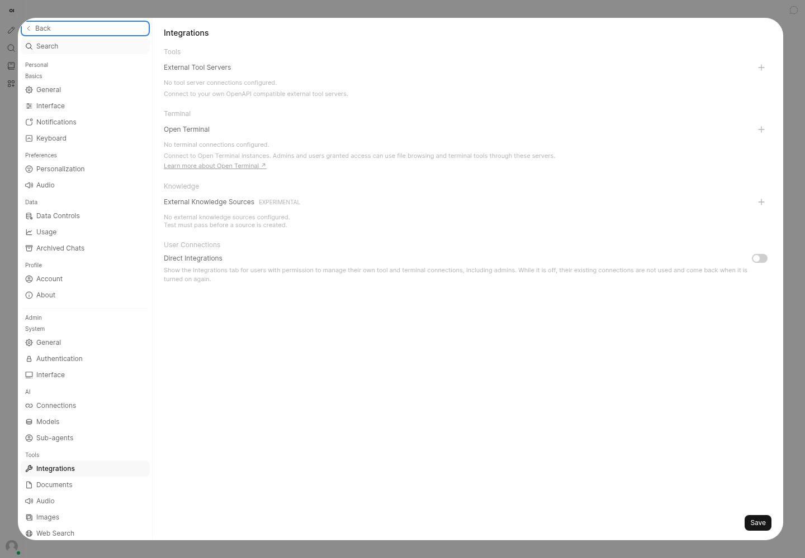
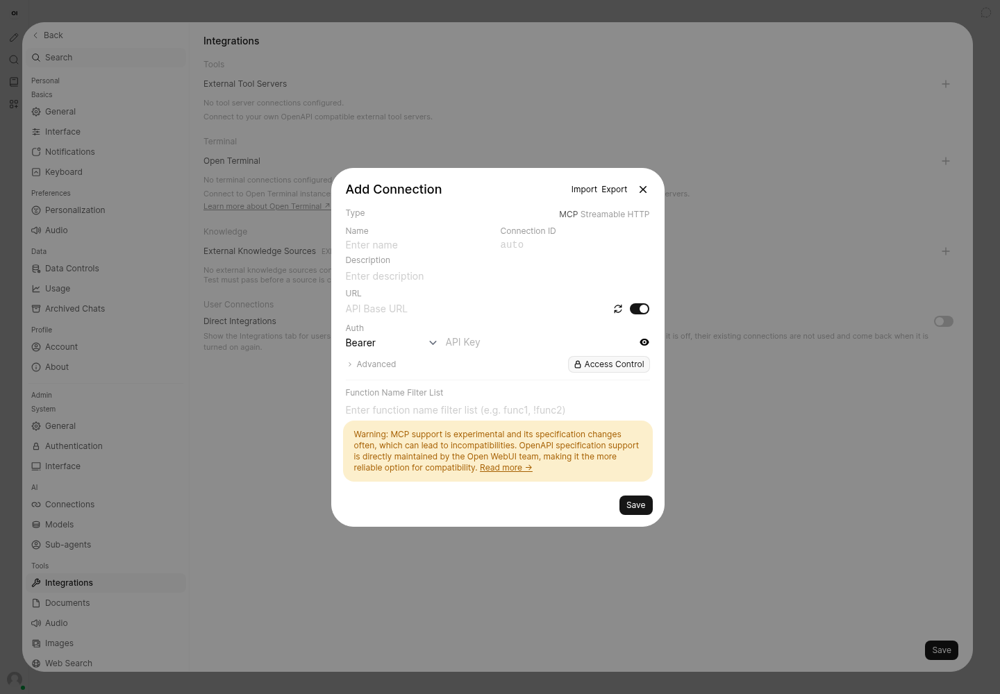

Actual local UI captures · Open WebUI 0.13.0 · 1440 × 1000 · synthetic SQL Review skill
Open running UI · No model credentials or live MCP connections configured.
Searchable rows, descriptions, owner, updated time, and enabled state.

File tree alongside Markdown; content actions stay close to the editor.

Private by default, with a separate access-grants dialog.

External tools, terminals, and knowledge sources grouped separately.

Transport, endpoint, authentication, access controls, and tool filtering in one form.
